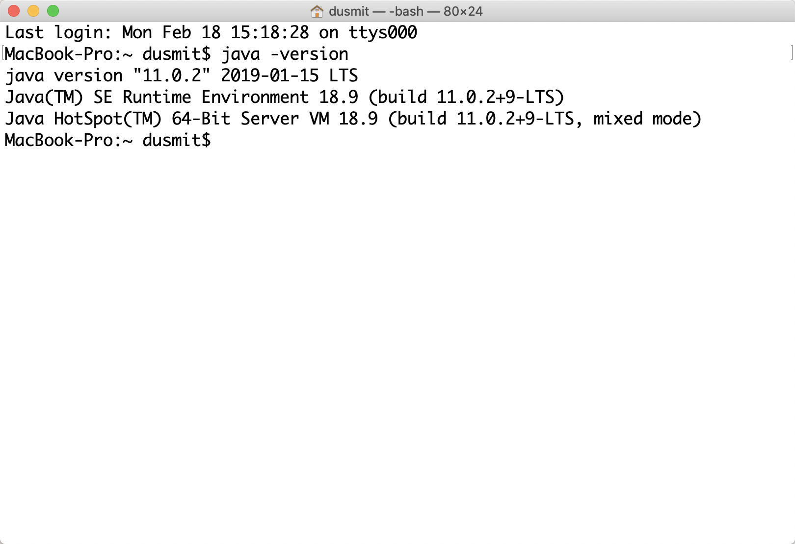
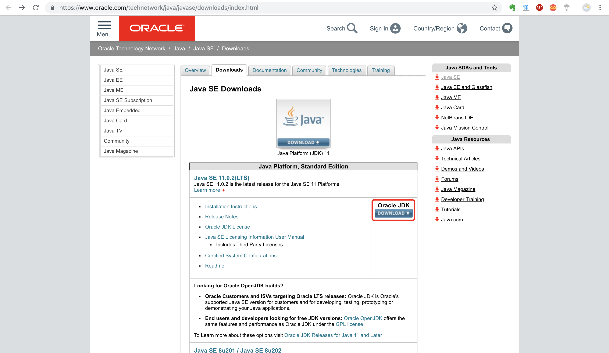
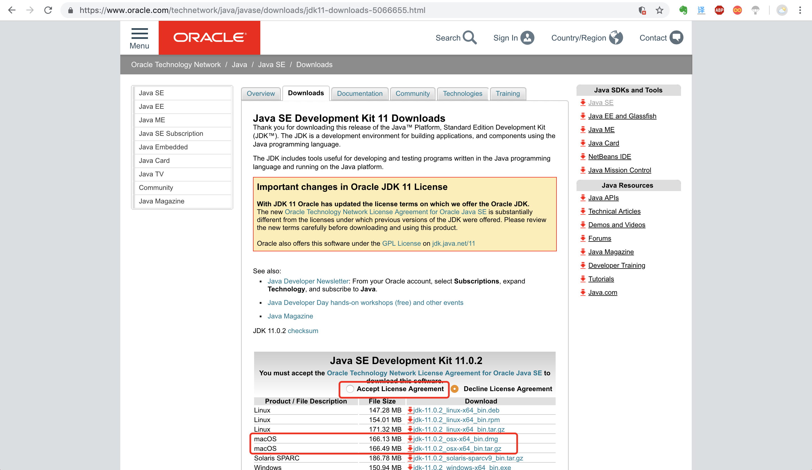
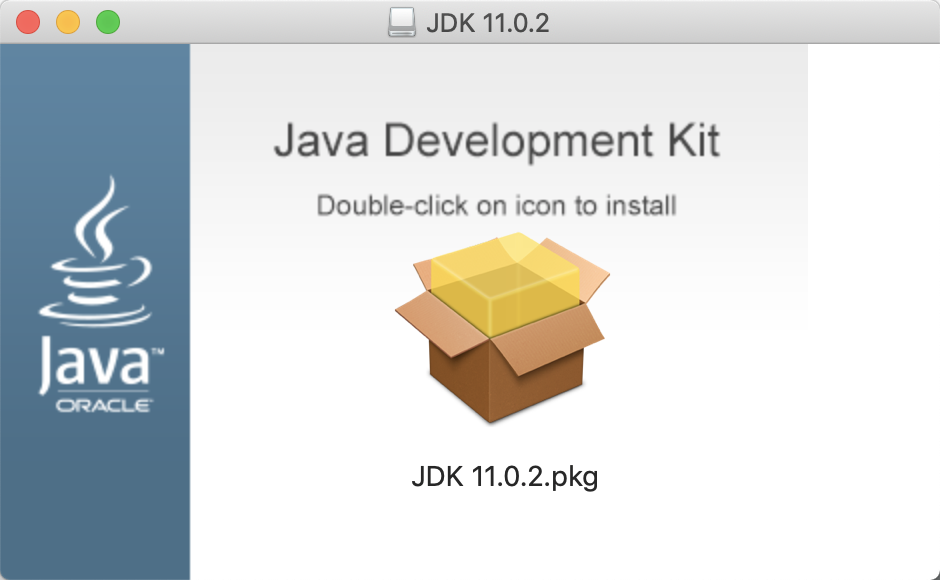
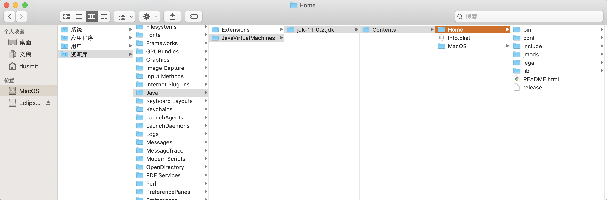
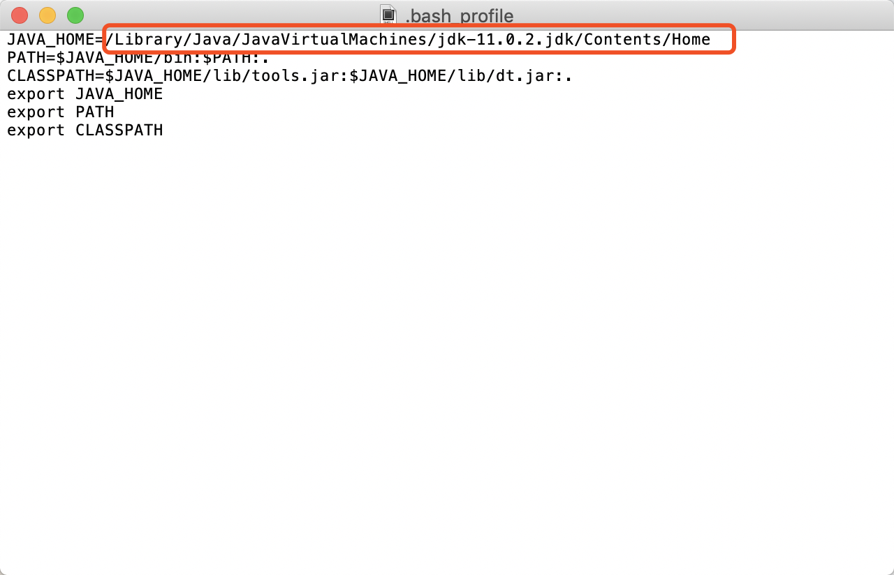
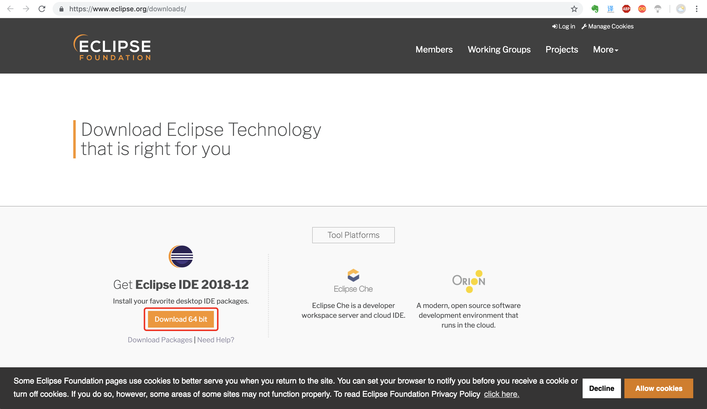
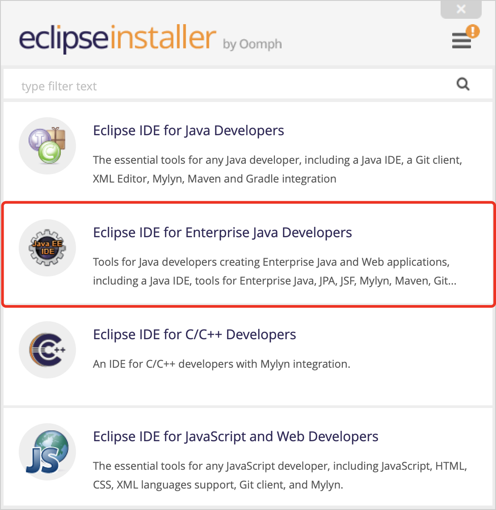
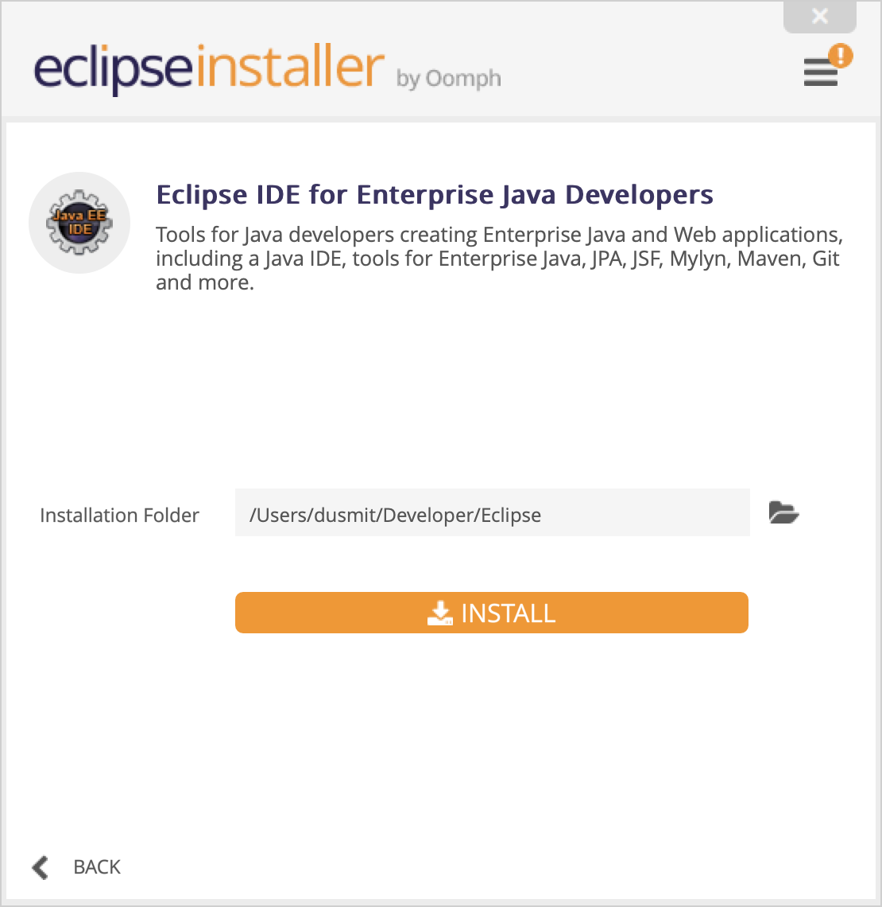
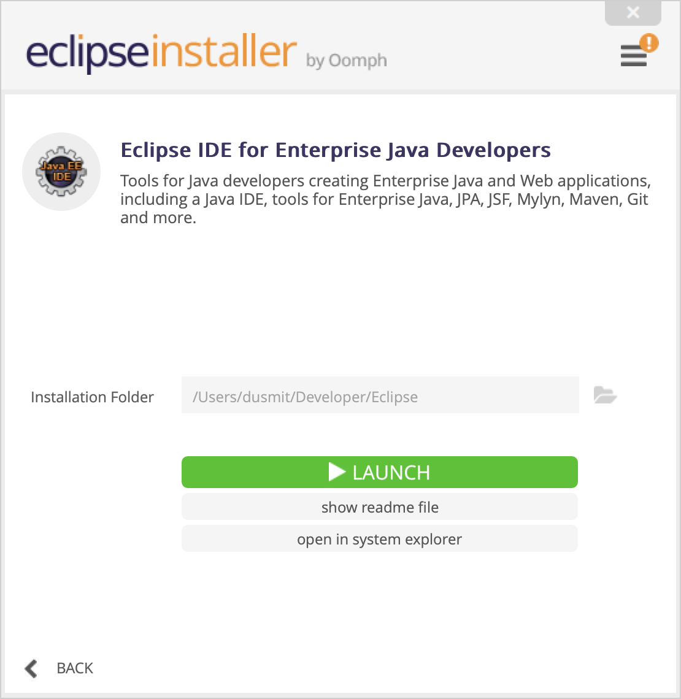

Mac 安装 Eclipse
1.检测是否安装Java运行环境
在终端中输入 $ java -version，如果出现下图所示则为已经安装了Java运行环境，请跳至步骤6

2.前往官网下载 Java JDK


3.安装JDK

4.找到如下路径文件夹 Home，这是JDK的根目录，其中
bin目录下存放JDK用于开发的一些终端命令工具。常见的工具如：
“javac”的作用是将java源文件编译为class文件(即自解码文件)；
“java”命令的作用是运行class文件。
db目录下是java开发的一个开源的关系型数据库；
include目录下是一些C语言的头文件；
jre目录下JDK所依赖的java运行时；
lib目录下存放JDK开发工具所依赖的一些库文件；
man目录下存放JDK开发工具的说明文档。

5.打开终端，配置Java环境变量
创建一个.bash_profile的隐藏配置文件
$ touch .bash_profile //创建一个.bash_profile的隐藏配置文件
打开.bash_profile文件
$ open -e .bash_profile
编辑：
1 | JAVA_HOME=/Library/Java/JavaVirtualMachines/jdk-11.0.2.jdk/Contents/Home |

红框为刚才步骤4找到的安装路径
使用Command+S保存编辑的文件
在终端中输入如下命令使配置生效
$ source .bash_profile
输入如下命令验证是否配置成功
$ java -version
6.官方下载安装包

7.安装 Eclipse，选择需要的组件，这里我选的是Java EE企业版 IDE

8.选择安装目录，点击INSTALL，弹出对话框一直选择 Accept


9.将安装目录下的APP拖放到系统 应用程序 文件夹
10.选择工程保存目录，安装完成